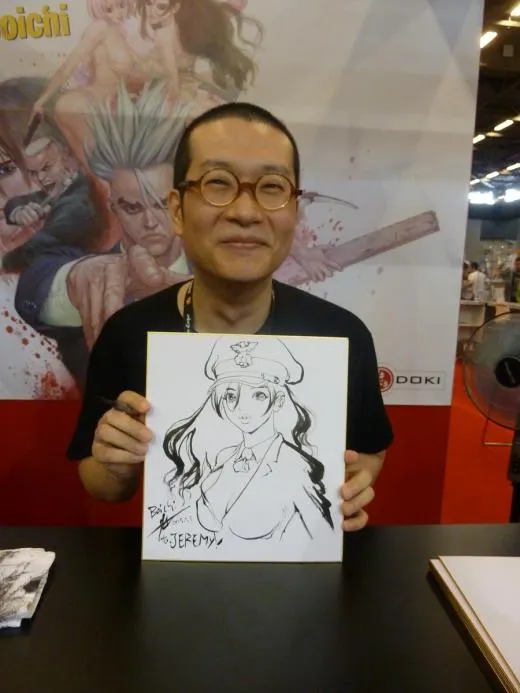

Synopsis
Ken Kitano, un jeune Japonais sans but, suit la femme qu'il aime, Yumin, en Corée du Sud. Mais alors qu'elle devient policière, il se retrouve entraîné dans le monde des gangs. De fil en aiguille, Ken gravit les échelons jusqu'à devenir le chef d'un puissant gang, Sun-Ken Rock, imposant sa vision de la justice dans un monde violent et corrompu.
Pris entre son amour pour Yumin et sa vie criminelle, il doit affronter des rivaux impitoyables, tout en forgeant son propre empire. Sun-Ken Rock mélange action explosive, humour et drame, offrant un regard unique sur le pouvoir et l'honneur.
Boichi
Boichi, de son vrai nom Mujik Park, est un mangaka sud-coréen né en 1973. Installé au Japon, il se spécialise dans des récits au style dynamique et détaillé. Avec Sun-Ken Rock, il explore le crime et l'honneur. Il est aussi connu pour Dr. Stone, une aventure scientifique à succès.
Découvrez d'autres oeuvresde Boichi
| Nom | Parution | Nb tomes/chapitres | Genre | Sous-genre |
|---|---|---|---|---|
| Dr. Stone | 2017 - 2022 | 26 tomes (232 chapitres) | Shōnen | Science-fiction, Aventure |
| Origin | 2016 - 2019 | 10 tomes (86 chapitres) | Seinen | Science-fiction, Cyberpunk |
| One Piece: Episode A (spin-off Ace) | 2011 - 2012 | 4 tomes (24 chapitres) | Shōnen | Aventure, Action |
| Sun-Ken Rock | 2006 - 2016 | 25 tomes (181 chapitres) | Seinen | Action, Mafia |